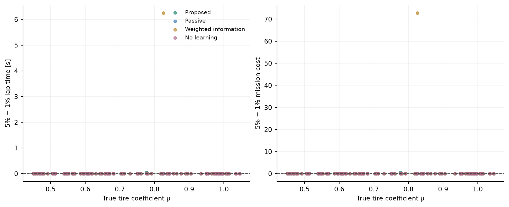
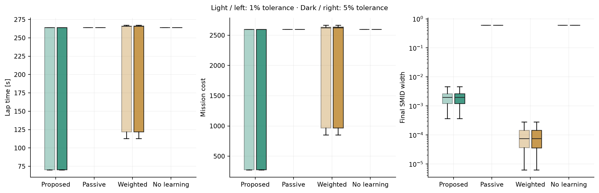
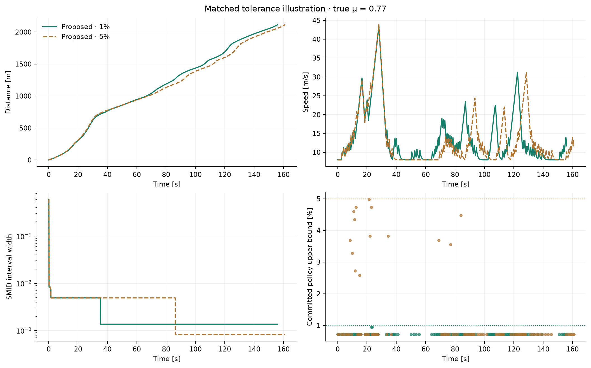
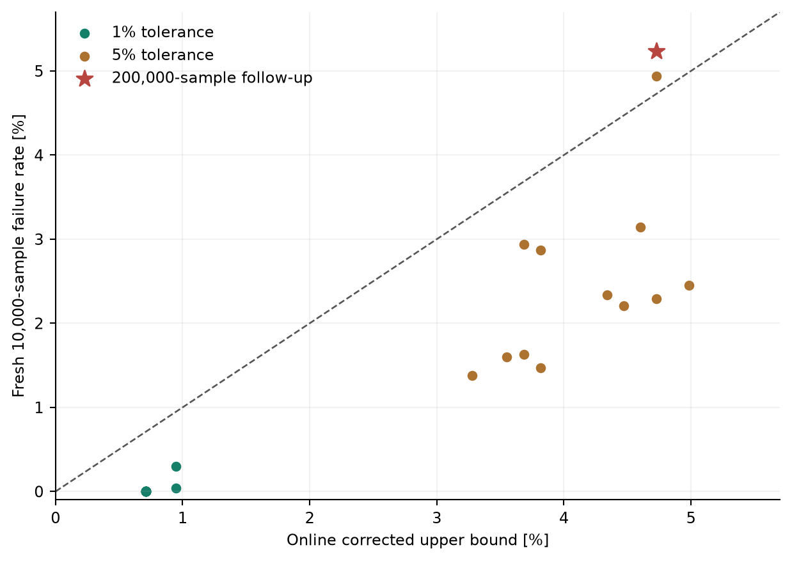

All results · Current replay
Earlier sampled-DRS reference study
Historical implementation. These runs used the earlier finite candidate library. They are preserved evidence, not validation of the current MPPI controller.
940 recorded episodes, including 100 paired Monte Carlo trials per method and tolerance.
Figures

01 tolerance effect · PNG · PDF
02 tolerance distributions · PNG · PDF
03 tolerance boundary case · PNG · PDF
04 certificate holdout · PNG · PDF